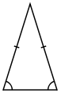
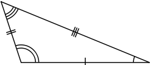

Триъгълник
Триъгълникът е една от основните фигури в геометрията. Представлява двуизмерна фигура, многоъгълник с три страни и три ъгъла.
Може да се дефинира и като част от равнината, ограничена от три точки, нележащи на една права, и трите отсечки, съединяващи тези точки .
Видове триъгълници
В зависимост от своите страни триъгълникът може да бъде равностранен, равнобедрен и разностранен, а в зависимост от своите ъгли – правоъгълен, тъпоъгълен и остроъгълен.
- Видове триъгълници в зависимост от страните:
- равностранен триъгълник (Фиг. 1) - когато дължините на трите страни са равни. В равностранните триъгълници ъглите също са равни (всеки от тях е 60°);
- равнобедрен триъгълник (Фиг. 2) - когато дължините на две от страните са равни. Двете равни страни се наричат бедра, а третата - основа. Този триъгълник има 2 равни ъгъла при основата;
- разностранен триъгълник (Фиг. 3) - когато всичките му страни са с различни дължини. Този триъгълник има три различни ъгъла.
 |
 |
 |
| Фиг. 1 |
Фиг. 2 |
Фиг. 3 |
- Видове триъгълници в зависимост от ъглиге - според големината на най-големия си вътрешен ъгъл, триъгълникът може да бъде:
- правоъгълен триъгълник (Фиг. 4) - триъгълник, който има един прав ъгъл (равен на 90⁰) и два остри ъгъла. Страната, срещулежаща на правия ъгъл, се нарича хипотенуза и е най-дългата страна във всеки правоъгълен триъгълник. Другите две страни се наричат катети;
- тъпоъгълен триъгълник (Фиг. 5) - триъгълник, който има един тъп ъгъл (по-голям от 90⁰) и два остри ъгъла;
- остроъгълен триъгълник (Фиг. 6) - триъгълник, при който всички вътрешни ъгли са по-малки от 90°.
Обобщена таблица с видовете триъгълници и техните характеристики.
Лице на триъгълник
Изчисляването на лицето на триъгълника, може да стане по различни начини. Геометричната формула за лице на триъгълник е:
S = ½а*ha
Където S е лицето на триъгълника, а е дължината на която и да е негова страна, а ha - височината, спусната към нея
Източник: „Уикипедия – свободната енциклопедия: Триъгълник“
{kind=link}
{kind=link}